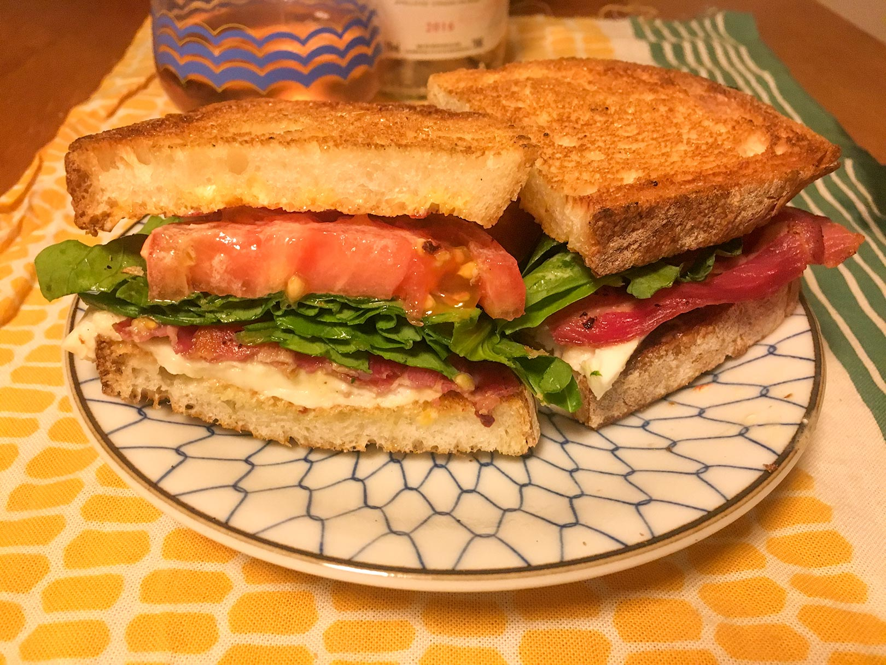
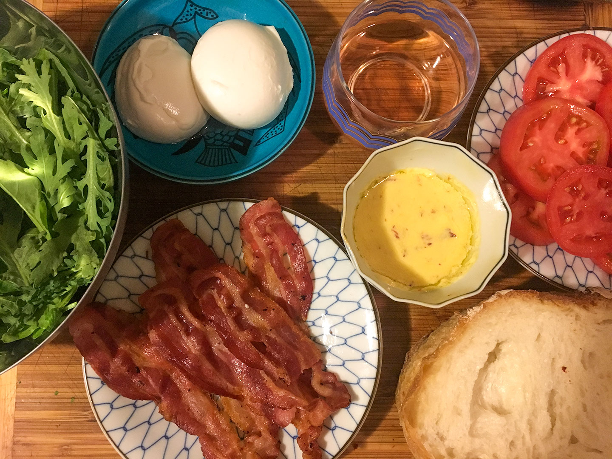

carefully curated opinions about the best (and worst) bars, restaurants, hotels, recipes, art and design across the world
Recipe
I Burrata be Sedated

Heirloom Tomato Burrata BLT with Chipotle Mayo
Prep time: 10 minutes | Cook time: 5 minutes
Serves 2 (if you want more... just double it ::wink::)†

Got some late season tomatoes you need something to do with? Have I got a sandwich for you..
Back when The Bonnie in Astoria first opened they served lunch every day of the week. I was frequently jetlagged and would roll out of bed around 2pm needing food. Lucky for me The Bonnies was there, frequently with John at the bar (he's a friend of mine. Sometimes he gives me my drinks for free...). I remeber it was one of those A-ha moments when I first read the Burrata BLT description. One of those, "It makes so much sense. Why didn't I think of that?" moments.
Sadly, The Bonnie only does lunch on Fridays and the Burrata BLT is no longer on the menu. In honor of one of my favorite sandwiches in the world, I attempted to faithfully recreate it. Good Appetite!
Ingredients
- 6 strips of bacon (preferably thick cut)
- 2 herloom tomatoes
- 1 ball of burrata cheese (it should be about the size of a deflated tennis ball*)
- large handful of arugula (I used chrysanthemum green, to mix it up a bit... but do whatever you want)
- 4 pieces of sliced country bread (Pain de campagne, rustic italian, sourdough.. whatever you want to call it)
- chipotle mayo
- Salt and freshly ground black pepper
- garlic clove
*Yes, I know tennis balls don't "deflate".. but imagine if it did. Like in the cartoons . God... tough crowd...)
Steps
(we put the important stuff in bold, so you can easily find it while simultaneously following along, frantically cooking and drinking wine)
- Pour yourself a glass of wine. I went with a rose since it's a summer sandwich
- Prepare the bacon. Bake it, pan fry it, deep fry it... whatever. Please don't microwave it... you're better than that. Microwaves are for weak people*
- slice the tomatoes widthwise 1/4-1/2 inch thick and sprinkle with salt. You really wanna taste the tomatoes, so cut them as thick as you want. Also, salting the tomatoes is important. You should always salt your tomatoes and let them sit at least 5 minutes before using them. The salt brings out the juice and thereby the flavor of the tomatoes.
- Toast your bread. When finished toasting rub one side with the cut end of garlic clove. This just gives the essence of garlic to your bread. It's what makes pan con tomate so delicious and It's something I recommend you do to every piece of toasted bread that leaves your kitchen...yes, even breakfast toast
- Spread chipotle mayo (recipe follows) on the side of the toast you rubbed with garlic
- layer with burrata, then tomatoes, then arugula. Sprinkle with salt and fresh ground black pepper
- Cut in half and enjoy. Pour yourself some more wine
*Jeez people... I'm kidding. Calm down. I also think umbrellas are for weak people... but I've been known to use one
For the Chipotle mayo
Open up a can of chipotles in adobo, and fish out 1 whole chipotle. Cut in half and discard the seeds (unless you want it really hot... but the smokiness without all the heat is better..trust me). Then mince.
Mix the chipotles with 4 tablespoons of mayo (I prefer Kewpie, it's Japanese and worth it), with 2 tablespoons of extra virgin olive oil and 2 tablespoons of the adobo sauce . Whisk together (you can do it with your fork... don't overthink it. Cooking is easy and fun. Drink some wine...)
These are also worth your time


A global branding , design & consulting agency from NYC, in Tokyo. We're big in Australia.